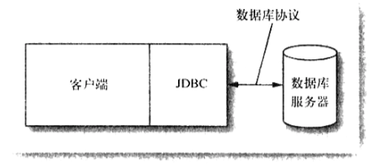
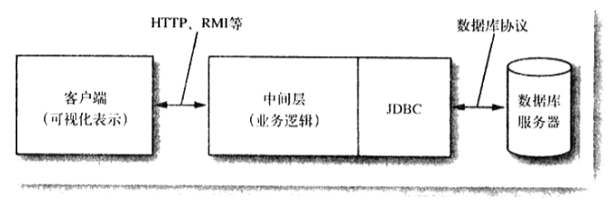

本文是对JDBC编程入门知识的总结，主要参考《Java核心技术》，包括一些JDBC常见用法的示例，代码均来自《Java核心技术》
JDBC编程简介
JDBC是Java语言 连接，操作关系型数据库的 API库；通过JDBC的API，Java程序可以连接各种数据库，增删改查数据和获取数据库的元数据
可略过 JDBC和数据库驱动的关系
JDBC定义了供数据库客户端连接和操作数据库的API接口，而具体实现是由各个数据库厂商已驱动的方式来提供，所以在运行环境中需要部署驱动才能真正运行
可略过 JDBC的驱动类型
- JDBC/ODBC桥接：驱动把JDBC调用翻译成ODBC调用，不推荐使用
- 驱动由Java类库和平台相关数据库客户端组成：客户代码使用驱动提供的Java类库来调用数据库客户端从而使用数据库
- 纯Java客户端类库：把数据库调用请求发送给服务器构建，由服务器把请求转换为数据库协议
- 纯Java类库：把JDBC调用直接转换为数据库协议
注意，在运行JDBC程序前需要安装数据库并下载和部署数据库驱动(jar包)到classpath中，请参考具体的数据库手册
JDBC典型用法
本地客户端程序直接使用JDBC来操作数据库

本地客户端程序连接服务器程序，由服务器程序使用JDBC来操作数据库

Java程序使用JDBC连接数据库
使用JDBC连接数据库包括两个步骤
- 注册数据库驱动
- 使用数据库服务器URL，user，password获取数据库连接
注册数据库驱动
如前所述，JDBC只是一些interface，而interface的具体实现是由数据库驱动来实现的，为了在Java代码中使用JDBC API的具体实现就需要注册 数据库驱动
注册的方法很简单，只需要加载数据库驱动jar包里的驱动类到JVM，然后通过该驱动类来获取JDBC中各个接口的具体实现
在代码中加载方法有两种
- 例如
Class.forName("org.apache.jdbc.ClientDriver") - 例如
System.setProperty("jdbc.driver", "org.apache.jdbc.ClientDriver")
获取数据库连接
把数据库驱动类加载到JVM以后，就可以通过DriverManager来获取数据库连接
涉及的API
- DriverManager.getConnection
String url = props.getProperty("jdbc.url");
String username = props.getProperty("jdbc.username");
String password = props.getProperty("jdbc.password");
Connection con = DriverManager.getConnection(url, username, password)；
Java代码执行SQL语句操作数据库
获取数据库连接Connection以后，通过Connection获取一个Statement，然后使用Statement来执行SQL语句，执行查询SQL语句会返回结果集ResultSet，通过ResultSet可以使用查询数据库的结果
上述的执行SQL语句流程示例
Connection con = DriverManager.getConnection(url, username, password)； // 获取一个连接
Statement stat = conn.createStatement(); // 获取一个Statement
ResultSet result = stat.executeQuery("select * from user"); // 执行数据库查询
while (result.next()) // 迭代结果集
{
for (int i = 1; i <= columnCount; i++)
{
if (i > 1) System.out.print(", ");
System.out.print(result.getString(i));
}
System.out.println();
}
// 释放资源
result.close();
stat.close();
con.close()
Statement是用来执行SQL语句的对象，它包括executeQuery，execute，executeUpdate等几种执行SQL语句的API，每种使用的场景不同，请参考API
管理Connection，Statement，ResultSet
Connection可以创建一个或以上的Statement，但有些数据库驱动只允许一个激活(没有close)的Statement，可以用DatabaseMetaData类来获取支持的最大Statement数
注意，很多跟数据库相关的信息，驱动的信息都能通过DatabaseMetaData类来获取
一个Statement可以拥有多个不相关的命令和查询，但最多只能同时打开一个ResultSet，当需要同时使用多个ResultSet的话可以考虑修改SQL或者用行集RowSet
通过使用它们的close方法来释放资源
分析SQL异常
SQLException是一个可迭代的对象，通过迭代SQLException来分析问题的根源
SQLWarning是非致命异常的替代品，可以通过它来获取一些关于执行问题信息
SQLException和SQLWarning都是多个对象链接而成链，通过迭代它们能获取更能多信息，并且它们都有API来获取error code等信息
执行查询操作详述
预备语句
有时候某些SQL语句只是部分参数不同，为了能重用SQL语句，可以使用预备语句PreparedStatement
例如，’select * from user where name = ？‘里的条件name的值是根据参数来决定的，其他部分能重用，使用可重用的SQL能创建一个PreparedStatement并重用，示例如下
String query = “select * from user where name = ？“;
PreparedStatement pstat = con.prepareStatement(query);
// 设置参数
pstat.setString(1, “name1”);
ResultSet s1 = pstat.executeQuery();
s1.close();
// 设置参数
pstat.setString(1, “name1”);
ResultSet s2 = pstat.executeQuery();
s2.close();
读写LOB属性
数据库可以存储二进制大对象Blob和字符型大对象Clob
Statement stat = conn.createStatement();
ResultSet result = stat.executeQuery("select * from user");
if (result.next())
{
Blob blob = result.getBlob(1);
InputStream in = blob.getInputStream();
}
Blob blob = conn.createBlob();
OutputStream out = blob.setBinaryStream();
out.write(..);
PreparedStatement stmt = conn.prepareStatement("insert into t values(?)");
stmt.setBlob(1, blob);
stmt.executeUpdate();
转义语句
JDBC能把转义语句转换成特定的数据库操作语法
转义语句主要包括以下分类:
- 日期和时间字面量，如{d ‘2008-01-04’}, {ts ‘2008-01-04 23:59:59.999’}
- 函数，如{fn left(?, 20)}
- 调用存储过程，如{call PROC1(?, ?)}
- like 条件里的转义符号 ,如 … where ? like %!_% * {escape !}
多结果集
当调用存储过程或在使用允许单个查询中提交多个select语句的数据库时，Statement.execute的执行结果会返回多个结果集，通过Statement.getMoreResults来的移动到其他结果集
boolean done = false;
boolean isResult = stmt.execute(command);
while(!done) {
if(isResult) {
ResultSet result = stmt.getResultSet();
// do something
} else {
int updateCount = stmt.getUpdateCount();
if(updateCount >= 0) {
// do something
} else {
done = true;
}
}
stmt.getMoreResults();
}
获取自动生成的键
stmt.execute(insertStatement, Statement.RETURN_GENERATED_KEYS);
ResultSet rs = stmt.getGeneratedKeys();
if(rs.next()) {
int key = rs.getInt(1);
}
可滚动和可更新的结果集
通过Connection.createStatement(type, concurrency)，Connection.preparedStatement(type, concurrency)可以配置可滚动和可更新的Statement和PreparedStatement
其中type的取值和意义如下
| Value | Meaning |
|---|---|
| TYPE_FORWARD_ONLY | 结果集不可滚动 |
| TYPE_SCROLL_INSENSITIVE | 结果集可滚动，但对数据库数据的更新不敏感 |
| TYPE_SCROLL_SENSITIVE | 结果集可滚动，对数据库数据的更新敏感 |
其中concurrency的取值和意义如下
| Value | Meaning |
|---|---|
| CONCUR_READ_ONLY | 结果集不能用于更新 |
| CONCUR_UPDATABLE | 结果集可用于更新表 |
通过下面的API来判断结果集是否支持可滚动和更新
ResultSet.getType
ResultSet.getConcurrency
通过下面的API来判断数据库驱动是否支持可滚动和更新
DatabaseMetaData.supportsResultSetType(type)
DatabaseMetaData.supportsResultSetConcurrency(concurrency)
可滚动的ResultSet带有一个光标，有一些API可控制其维护的光标
rs.next()
rs.previous()
rs.relative(n) //相对当前位置移动光标
rs.absolute(n) //移动光标到指定行号
rs.getRow() //获取光标行号
first，last，beforeFirst，afterLast等
isFirst，isLast，isBeforeFirst，isAfterLast等
更新一行的某些属性
可更新的ResultSet中，ResultSet.updateXxx(i, XXX) 是用来更新结果集某一行的一个的属性
更新完属性以后还得使用ResultSet.updateRow()发送更新到数据库
插入新行
使用可更新的ResultSet可以插入新行
rs.moveToInsertRow();
rs.updateString("Title", title);
rs.updateString("ISBN", isbn);
rs.updateString("Publisher_id", pubid);
rs.insertRow(); //发送插入请求到数据库
rs.moveToCurrentRow();
删除行
rs.deleteRow()
行集
数据集的一个弊端是要一直占用一个连接，为了在不同地方处理查询结果的过程中不占用连接，可以使用行集RowSet
有多重扩展了RowSet接口的子接口：
- CachedRowSet：允许断开连接的操作
- WebRowSet：一个被缓存的行集，该行集能把数据保存到XML文件，需要使用的时候用WebRowSet打开XML文件即可
- FilterRowSet和JoinRowSet：能在行集上执行相当于select和join的操作
- JdbcRowSet：简单封装了RowSet提供get，set方法，相当于把RowSet转换为一个bean
JDBC规范希望由厂商提供以上接口的高效实现，但JDBC同时也提供了参考实现，实现类以Impl结尾
构造行集的方式有两种
ResultSet result = ...
CachedRowSet crs = new CachedRowSet();
crs.setTableName(tableName);
crs.populate(result);
conn.close();
CachedRowSet crs = new CachedRowSet();
crs.setUrl("jdbc:...");
crs.setUser("...");
crs.setPassword("...");
crs.setCommand("select * from user where name = ?");
crs.setString(1, "..");
crs.excute(); // 执行查询，自动填充数据，并释放连接
当数据量过大时，可以通过crs.setPageSize(size)，crs.nextPage()来本批获取数据
当使用可更新的数据集可以使用crs.acceptChanges()和crs.acceptChanges(conn)来更新数据集
元数据
描述数据库及其组成部分的数据叫做元数据，通过JDBC API可以获取三类元数据：关于数据库的元数据、关于结果集的元数据、关于预备语句参数的元数据
通过DatabaseMetaData来获取数据库的信息，例如：
DatabaseMetaData meta = conn.getMetaData();
ResultSet mrs = meta.getTable(null, null, null, new String[]{"TABLE"});
while(mrs.next())
System.out.println(mrs.getString(3)); // print table names
DatabaseMetaData有很多方法来获取数据库的信息
通过ResultSetMetaData能获取数据集相关信息，例如：
ResultSet mrs = stat.executeQuery("select * from " + tableName);
ResultSetMetaData meta = mrs.getMetaData();
for(int i = 0; i < meta.getColumnCount(); i++) {
String columnName = meta.getColumnLabel(i);
int columnWidth = meta.getColumnDisplaySize(i);
...
}
事务
多个SQL语句能组成一个事务，事务能提交和回滚；默认情况下，JDBC是自动提交模式，为了启用事务，需要关闭自动提交
使用事务的过程一般如下：
conn.setAutoCommit(false);
Statement stmt = conn.createStatement();
stmt.executeUpdate(command1);
stmt.executeUpdate(command2);
stmt.executeUpdate(command3);
...
conn.commit();
// or conn.rollback();
保存点
可以在事务中使用保存点，回滚的时候可以回滚到保存点，例如
conn.setAutoCommit(false);
Statement stmt = conn.createStatement();
stmt.executeUpdate(command1);
stmt.executeUpdate(command2);
Savepoint svpt = conn.createSavepoint();
if(..) conn.rollback(svpt);
...
conn.commit();
conn.releaseSavepoint(svpt);
批量更新
当需要执行多次insert语句时，可以使用批量更新来提高性能
通过DatabaseMetaData.supportBatchUpdates来查看驱动是否支持批量更新
批量操作中不能包含查询语句
一般批量更新是在一个事务之中，以保证批量更新能以原子的方式成功
boolean autoCommit = conn.getAutoCommit();
conn.setAutoCommit(false);
Statement stmt = conn.createStatement();
stmt.addBatch(command1);
stmt.addBatch(command2);
stmt.addBatch(command3);
...
int[] counts = stmt.executeBatch();
conn.commit();
conn.setAutoCommit(autoCommit);
数据库连接管理
在企业应用中数据库连接管理主要包括两方面：
- 数据源连接信息的管理：集中管理一个数据源的连接信息并为客户端提供数据源服务
- 数据库连接的管理：建立数据库连接，并以连接池的方式来管理连接资源
连接池服务一般是由Web容器或应用服务器提供，在容器中配置好数据库的连接信息后，客户端通过JNDI来获得
获取数据源和连接的方法一般如下：
Context jndiContext = new InitialContext();
DataSource source = (DataSource)jndiContext.lookup("java:...");
Connection conn = source.getConnection();
Java EE5 容器中支持标注获取DataSource
@Resource("jdbc/corejava")
private DataSource source;
参考文献
《Java核心技术》
JDBC(TM) Database Access